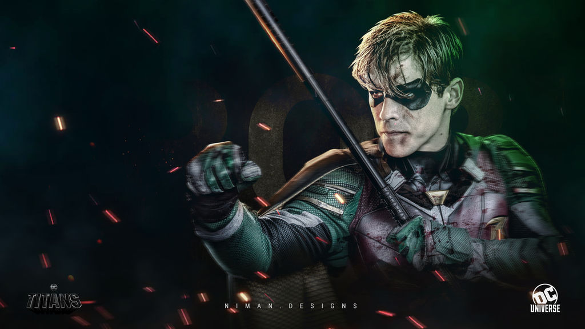
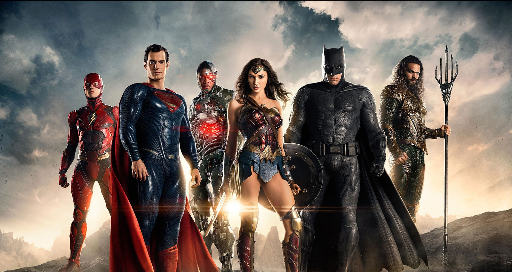
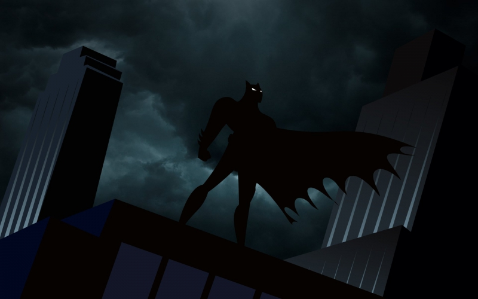
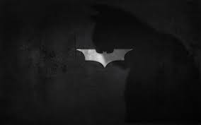

PARCEIROS



O Batman (inicialmente chamado o Bat-Man) também conhecido pelas alcunhas Homem-Morcego, Cavaleiro das Trevas, Cruzado Encapuzado, Maior Detetive do Mundo, é um personagem fictício e super-herói encapuçado da editora norte-americana DC Comics, criado pelo desenhista Bob Kane e pelo escritor Bill Finger, aparecendo pela primeira vez na história em quadrinhos Detective Comics#27 (maio de 1939) com o nome "o Bat-Man".
Batman opera na cidade fictícia de Gotham City, sendo ajudado por seu mordomo Alfred Pennyworth, o comissário da polícia Jim Gordon e aliados vigilantes como Robin. Ao contrário da maior parte dos super-heróis, Batman não tem superpoderes; assim, na sua guerra contra o crime, utiliza seu intelecto de gênio, sua perícia em artes marciais e sua destreza física — bem como sua riqueza, que lhe garante um enorme arsenal de armas e equipamentos de última geração.
